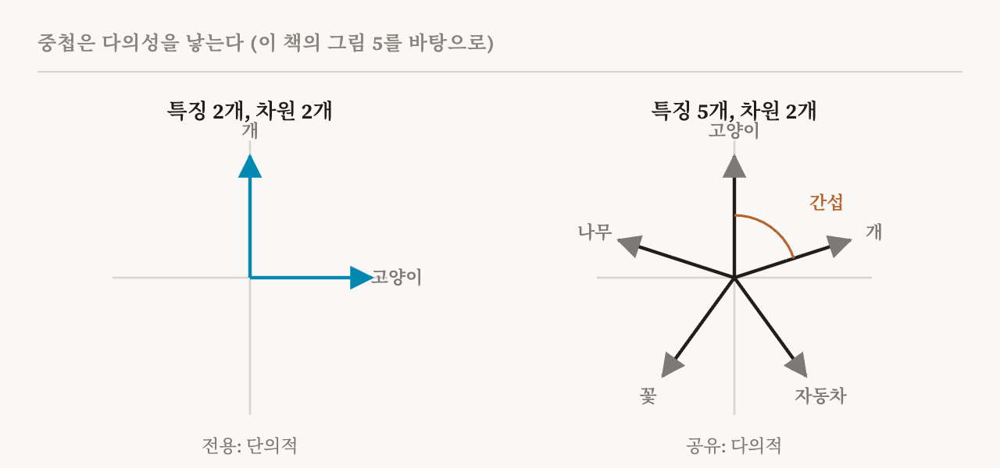
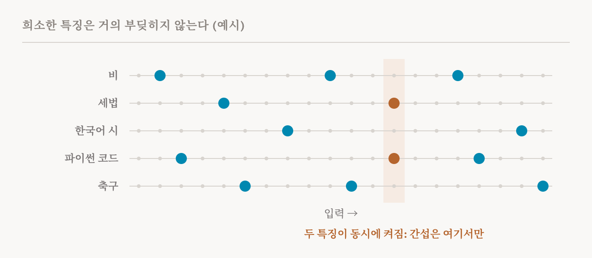

7편의 가설은 개념이 방향이라고 말했습니다. 이번 편은 모델이 방향을 몇 개나 쓸 수 있는지, 그리고 담을 공간보다 더 많이 필요할 때 무슨 일이 일어나는지 묻습니다. 이 책의 5.2절(28–30쪽)을 다룹니다. 여기서 다루는 중첩(superposition) 가설은 5편의 다의적 뉴런을 설명하는 가장 흔한 답이고, 다음 부에서 다룰 도구들이 존재하는 이유이기도 합니다.
가설
중첩 가설은 모델의 은닉 상태가 차원 수보다 많은 특징을 담고 있다고 말합니다. 모델이 d개의 차원에 m개의 특징을 표현한다면, 이 가설은 m이 d보다 훨씬 크다고 주장합니다.
여기서 두 가지 결과가 나옵니다. 첫째, 특징들이 모두 서로 직교할 수는 없습니다. 두 방향이 직교한다는 것은 서로 직각을 이룬다는 뜻으로, 한 방향으로 움직여도 다른 방향으로는 전혀 움직이지 않는다는 뜻입니다. d차원 공간에는 서로 모두 직각인 방향이 많아야 d개 들어갑니다. 특징이 그보다 많으면 일부는 겹칠 수밖에 없습니다.
하지만 거의 직교할 수는 있습니다. 직각에 가깝지만 정확히 직각은 아닌 각도로 놓이는 것입니다. 여기서는 2차원과 3차원에서 길러진 일상의 직관이 우리를 잘못 이끕니다. 수천 차원의 공간에서는, 서로 거의 직각인 방향의 수가 차원 수보다 엄청나게 많을 수 있습니다. 이 절에 딸린 이 책의 노트북은 존슨–린덴스트라우스 보조정리(Johnson–Lindenstrauss lemma)라는 수학 결과로 그 이유를 설명합니다. 그러니 큰 모델은 약간의 겹침만 감수하면 거의 독립적인 방향을 아주 많이 쓸 수 있습니다.
둘째, 중첩은 다의성을 낳습니다. 특징이 차원보다 많으면 모델은 특징마다 자기 뉴런을 줄 수 없습니다. 특징들이 같은 차원을 나눠 써야 하므로, 뉴런 하나가 서로 무관한 여러 개념을 담는 데 함께 관여하게 됩니다.

나눠 쓰는 것이 이득일 수 있는 이유
겹침에는 대가가 있습니다. 두 특징이 차원을 나눠 쓰면, 한 특징이 켜질 때 다른 특징을 읽는 값도 조금 켜집니다. 이를 간섭(interference)이라고 부릅니다. 그렇다면 학습은 왜 이런 배치를 택할까요?
이 책이 여기서 주로 기대는 2022년 연구 「Toy Models of Superposition」이 표준적인 답을 줍니다. 이 연구는 아주 작은 신경망에게 차원보다 많은 특징을 저장했다가 되살리도록 학습시키고, 신경망이 언제 중첩을 택하는지 지켜보았습니다. 열쇠는 희소성(sparsity), 곧 각 특징이 얼마나 드물게 켜지는가였습니다. 대부분의 개념은 대부분의 입력에 없습니다. 요리에 관한 문서에 세법이 나오는 일은 드물고, 코드 한 줄에 한국어 시가 들어 있는 일도 드뭅니다. 두 특징이 함께 켜지는 일이 드물다면 둘 사이의 간섭도 거의 문제가 되지 않고, ReLU 같은 비선형 함수가 남은 작은 겹침을 걸러 낼 수 있습니다. 이런 조건에서는 희소한 특징 여럿을 적은 차원에 채워 넣는 것이 좋은 거래이고, 작은 신경망들은 실제로 그렇게 했습니다. 특징이 자주 켜질 때는 그렇게 하지 않았습니다.

이 책의 실습 노트북은 이 작은 모델을 재현합니다. 작은 신경망을 학습시킨 다음, 학습된 특징 방향들이 서로 얼마나 겹치는지 도표로 보여 줍니다. 특징들이 각자 차원을 받았는지, 함께 밀어 넣어졌는지를 직접 확인할 수 있습니다.
증거
이 책은 두 종류의 증거를 듭니다. 첫째, 기계적 연구들은 다의적 뉴런이 널리 퍼져 있다는 것을 거듭 발견했습니다. 개별 뉴런이 서로 무관한 여러 개념에 켜지는 경우가 많고, 그래서 뉴런 하나만 떼어 읽기 어렵습니다. 둘째, 중첩을 가정하고 만든 방법들이 잘 작동합니다. 딕셔너리 학습(dictionary learning) 방법, 그 가운데서도 희소 오토인코더는 활성값이 희소한 특징 여럿의 합이라는 생각에서 출발하는데, 나눠 쓰인 활성 공간에서 수백만 개의 서로 다른 특징을 찾아냅니다. 이렇게 찾은 특징 상당수는 개별 뉴런보다 훨씬 단의적이고, 일부는 모델의 행동에 인과적으로 영향을 준다는 것이 확인되었습니다. 이런 결과들을 함께 놓고 보면, 활성 공간이 담은 의미는 개별 뉴런의 축보다 방향을 따라 더 많이 놓여 있을 수 있습니다.
아직은 가설
이 책은 대규모 언어 모델에서 중첩이 확립된 사실이 아니라 여전히 가설이라는 점을 분명히 하고, 조심해야 할 이유를 세 가지 듭니다.
첫째, 다의적 뉴런이 있다는 것만으로 중첩이 그 원인이라고 할 수는 없습니다. 둘째, 딕셔너리 학습 방법은 중첩이 없을 때도 해석 가능한 특징을 찾아낼 수 있으므로, 그 성공이 중첩의 존재를 증명하지는 않습니다. 셋째, 2024년의 한 연구는 특징이 뉴런보다 많지 않을 때도 다의성이 생길 수 있음을 보였습니다. 이 연구에 따르면 뉴런은 공간이 모자라서가 아니라, 학습이 어디서 시작했는지나 그 과정의 잡음처럼 우연한 이유로 개념을 섞게 될 수 있습니다. 이 책은 이를, 중첩과 함께 작용할 수도 있는 다른 메커니즘들이 뉴런을 다의적으로 만들 수 있다는 신호로 읽습니다.
설계의 문제로서의 중첩
이 절은 문제를 다르게 보게 하는 생각으로 끝납니다. 중첩은 깊은 신경망이 피할 수 없는 성질이 아닙니다. 보통의 구조가 그것을 허용하기 때문에 생깁니다. 구조나 활성값에 아무 제약이 없으면, 학습 과정인 경사 하강법(gradient descent)은 활성 공간의 기하를 마음껏 이용해서 뉴런 수보다 훨씬 많은 특징을 채워 넣습니다.
이는 다른 연구 방향을 시사하며, 이 책은 이를 설계로 얻는 해석 가능성(interpretability by design)이라고 부릅니다. 완성된 모델의 중첩된 활성값을 나중에 풀어내는 대신, 특징을 분석하기 쉬운 표현을 낳도록 구조나 구성 요소를 설계할 수 있다는 것입니다. 이 책은 개입할 지점을 두 군데 꼽습니다. 하나는 가중치나 활성값에 희소성을 강제하는 것입니다. 입력 하나에 MLP나 어텐션 헤드의 뉴런이 몇 개까지 참여할 수 있는지 제한해서, 한 특징을 함께 실어 나를 수 있는 단위의 수를 제한합니다. 초기의 예로 MLP 뉴런을 단의성 쪽으로 밀도록 설계한 2022년의 활성화 함수 SoLU가 있습니다. 다른 하나는 분석의 기본 단위를, 활성값 안의 고정된 특징에서 가중치 행렬이 수행하는 학습 가능한 변환으로 바꾸는 것입니다. 어떤 과제에는 이쪽이 더 잘 맞고, 표현을 압축해야 하는 압력도 사라집니다.
어느 쪽이든 중첩은 거꾸로 풀어내야 하는 현상에 그치지 않고, 처음부터 제한할 수 있는 설계의 선택이 됩니다. 이런 방법과 그 대가는 15편에서 다룹니다.
| 용어 | 뜻 |
|---|---|
| 중첩 | 특징들이 공간을 나눠 쓰게 해서, 차원 수보다 많은 특징을 담는 것 |
| 직교 | 직각을 이루어서, 한 방향으로 움직여도 다른 방향으로는 움직이지 않는 관계 |
| 거의 직교 | 직각에 가까운 각도. 고차원에서는 이런 방향이 차원 수보다 훨씬 많이 들어감 |
| 간섭 | 한 특징이 자기와 겹치는 다른 특징을 읽는 값에 일으키는 작고 원치 않는 활성 |
| 희소성 | 특징이 얼마나 드물게 켜지는지. 대부분의 특징은 대부분의 입력에 없음 |
| 장난감 모델 | 어떤 현상을 통째로 연구할 수 있도록 단순한 과제로 학습시킨 아주 작은 신경망 |
| 딕셔너리 학습 | 활성값을 희소한 특징 여럿의 합으로 다시 쓰는 방법들 |
| 경사 하강법 | 오차를 줄이도록 가중치를 조금씩 고쳐 나가는 학습 과정 |
| 설계로 얻는 해석 가능성 | 특징을 나중에 풀어내는 대신, 처음부터 특징을 읽기 쉬운 모델을 만드는 것 |
| SoLU | MLP 뉴런을 더 단의적으로 만들도록 설계한 활성화 함수 |
9편에서는 남은 두 가설을 다룹니다. 모델이 자기 내부를 설명할 수 있다는 가설, 그리고 서로 다른 모델이 같은 것을 배운다는 가설입니다.